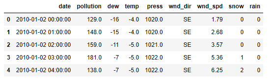
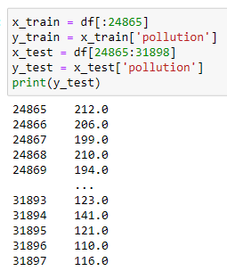
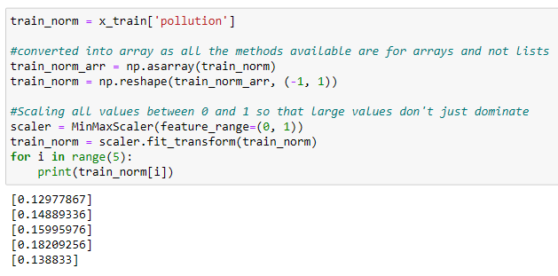
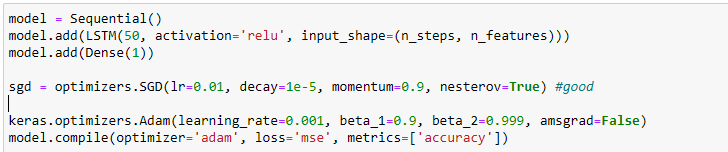
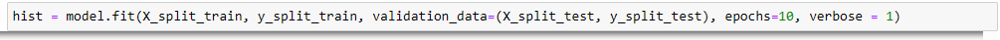
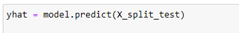
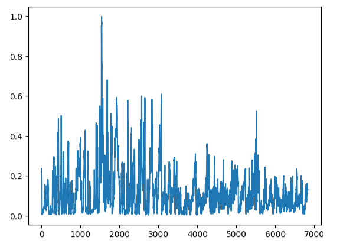
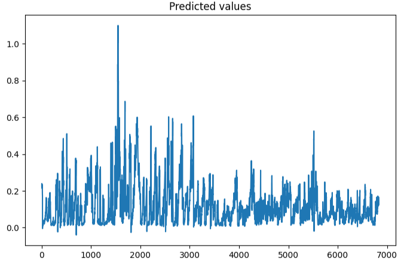
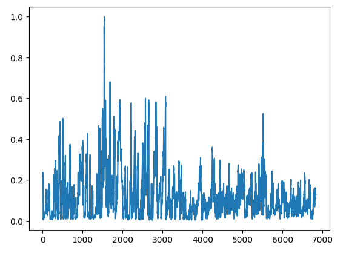
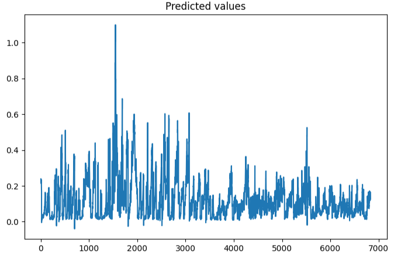

Air Pollution Prediction
Introduction
Over the past few decades, due to human activities, industrialization, and urbanization, air pollution has become a life-threatening factor in many countries around the world. Among air pollutants, Particulate Matter with a diameter of less than 2.5μm (PM2.5) is a serious health problem. This project aims to study the pollutant in the air of a city and try to predicts the pollution
Dataset
Data Analysis
Data analysis refers to the process of manipulating raw data to uncover useful insights and draw conclusions. In this project dataset in taken from recognised platform named Kaggle, 'LSTM-Multivariate_pollution.csv'.
On describing dataset it shows:
Scaling of Dataset
Scaling of features is an essential step in modelling the algorithms with the datsets. The data obtained contains features of various dimensions and scales altogether. Different scales of the data features affect the modeling of a dataset adversely. Here MinMaxScaler() function is used for scaling.
 Training and Testing of Model
Training data is the subset of original data that is used to train the machine learning model, whereas testing data is used to check the accuracy of the model. The training dataset is generally larger in size compared to the testing dataset.
Training data shape : 23153
Testing Data Shape : 6834

Libraries used in the code
NumPy
Pandas
Keras
Tensorflow
Sklearn
Seaborn
Building a Recurrent Neural Network
LSTM is used for RNN
LSTM stands for long short-term memory networks, used in the field of Deep Learning. It is a variety of recurrent neural networks (RNNs) that are capable of learning long-term dependencies, especially in sequence prediction problems.
LSTM is a higher memory power to remember the outputs of each node for a more extended period to produce the outcome for the next node efficiently. LSTM networks combat the RNN's vanishing gradients.


Left : LSTM Architecture Right : RNN Architecture
Cell State :The Main concept of LSTM is cell state. Cell state can act as a transport highway that transport the relative information along the sequence chain. Also cell state can be considered as a kind of long term memory that detains atleast part of the information of earlier states by using combination of partial forgetting and increment operations on previous state. This information is added or removed from cell states via some gates.
Gates :The gates are different neural network that decides which informtation is allowed to which gates.
Forget Gate :This gate decides what information should be kept or throw away. Information from the previous hidden state and current input state is pass through sigmoid function values about 0 and 1.
Input Gate :This is required to update cell state. The value of the previous hidden state and current input is passed through a sigmoid funtion. It decides whihc value is important and which is not.
New Cell State :The cell state gets element wise multiplication by forget gate first then the input from the input gate and performs element wise addition.
Ouput Gate :This is the last gate, which decides what information should be moved formward.
First the previous hidden state and the current input pass into the sigmoid function and the newly modified cell state is pass to tanh function. The tanh output is multiplied with sigmoid output to decide what information the hidden should carry. The new cell state & the new hidden state is then passed to the next time stamp.
 What are RELU, Tanh know here --
Activation functions
The common problem in most of the learning is how the gradient flows in the network because in some cases gradient is sharp and in some it is slow or even zero. This creates problem in optimal selection techniques for learning parameters. The Activation functions are designed to overcome issues of gradient like vanishing and exploring of gradient. Activation functions are defined as a function used in ANN to compute the weighted sum of input and biases and is use to decide whether a neuron will get activated or not. It manipulates the input via. some gradient processes like gradient descent and then produce output for ANN. These activation functions are termed as transfer function.
ReLU
A rectified linear unit (ReLU) is an activation function that introduces the property of non-linearity to a deep learning model and solves the vanishing gradients issue. It interprets the positive part of its argument. It is one of the most popular activation functions in deep learning. ReLU performs threshold operation to each input element where value is less than 0 are set to 0. The functional form of ReLU is :
The function rectifies the value of the input less than 0 therby forcing them zero and elimination vanishing gradient problem. It has limitation of overfitting that is overcome by dropout technique.
TANH
It is a zero centered function whose range lies between -1 to +1. The function is
f(x) = e^x -e^-x/e^x + e^-x
It gives better training performance for MLP but cannot solve vanishing gradient problem.
Predictions
Conclusions of the results
Test Values and Predicted values plot are quite same as we have got 93.28% accuracy in prediction.
 



Left : Test values plot Right : Predicted values plot
Link of the Notebook
mohdzain98/Air_Pollution_Prediction(:github.com) mohdzain98/Air_Pollution_Prediction(:github.com)References
- Github Repository
- Kaggle for dataset
- Sklearn official website
© 2022 Mohd Zain
Powered by Bootstrap
Published on : 07 Sep,2022
Updated on : 01 sep,2023 Version:1.7
Updated on : 01 sep,2023 Version:1.7